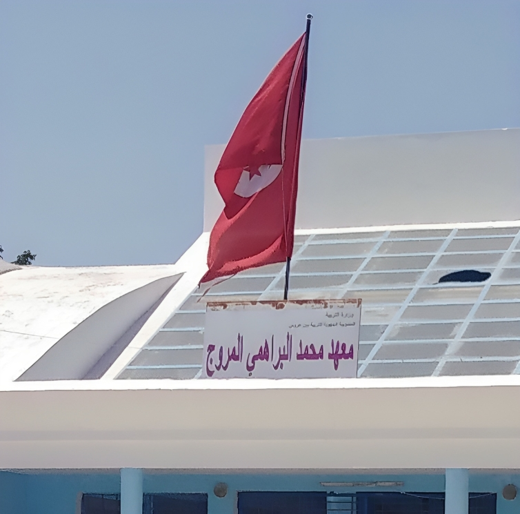
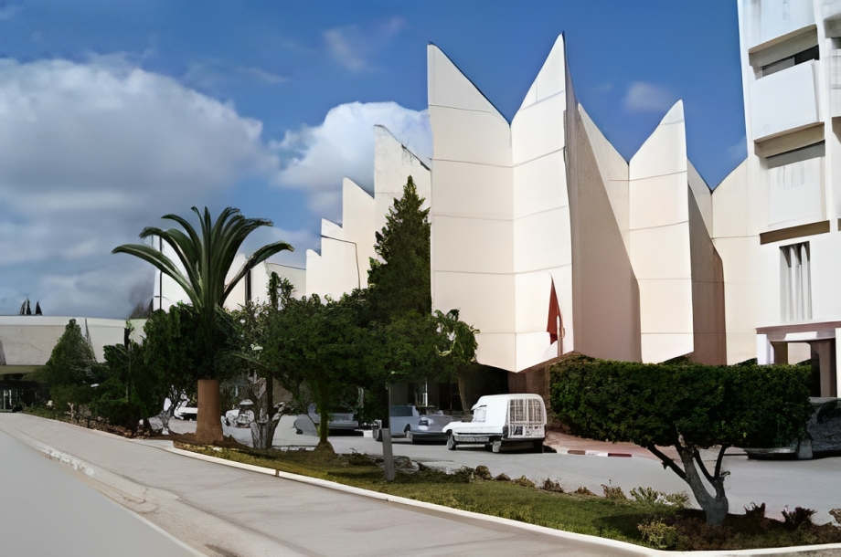
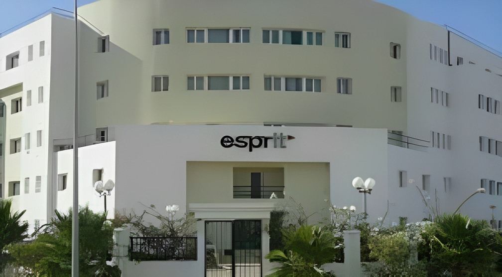

Carrière
Je suis Mohammed Amine Hedhili, un professionnel passionné de Data Science.
Après avoir effectué mes études au lycée Mohammed El Brahmi El Mourouj 6 pendant 4 années, j'ai continué mon parcours académique à la Faculté des Sciences de Tunis, cycle préparatoire, pour une durée de 2 années. Par la suite, j'ai intégré l'école d'ingénieurs ESPRIT, où j'ai suivi un cycle d'ingénieurs de 3 années avec une spécialité en Data Science.
Au cours de ma formation, j'ai eu l'opportunité de mettre en pratique mes connaissances à travers divers projets en Data Science. Certains de ces projets incluent des domaines tels que la vision par ordinateur, l'analyse de sentiments sur les médias sociaux, et la prévision de la demande à l'aide de modèles de Machine Learning. Ces projets m'ont permis de développer des compétences pratiques et de consolider mes connaissances dans le domaine.
Mon parcours professionnel inclut des expériences enrichissantes au sein de certaines entreprises renommées, où j'ai contribué à des projets significatifs liés à la Data Science.
Je suis déterminé à continuer d'explorer et d'apporter ma contribution au domaine passionnant de la Data Science, en mettant en avant mon expertise acquise au fil de mes études et expériences professionnelles.
Merci de prendre le temps de découvrir mon parcours et mes réalisations.



Expérience Professionnelle
Scientifique des Données chez Tech XYZ
Période : Juin 2021 - Aujourd'hui
Description : Mise en œuvre d'initiatives en science des données, développement de modèles prédictifs et collaboration avec des équipes interfonctionnelles pour générer des insights métier.
Stagiaire de Recherche au Laboratoire d'Analyse de Données
Période : Janvier 2020 - Mai 2021
Description : Réalisation de recherches sur les tendances émergentes en science des données, mise en œuvre d'algorithmes et contribution à des articles publiés dans des revues réputées.